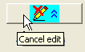

Zur Vereinfachung oder Anzeige einer detaillierteren Ansicht der Eigenschaften verwenden Sie das Kontextmenü, um die ausgewählten Knoten, Unterknoten und Geschwisterknoten zu erweitern bzw. zu minimieren.
Der Dialog Format als Design speichern kann verwendet werden, um eine Reihe von Eigenschaften des Diagramms oder des Diagrammobjekts in einem Design zu speichern, das dann auf andere Diagramme angewendet werden kann. Der Dialog kann durch Klicken mit der rechten Maustaste auf ein Diagramm oder Diagrammobjekt (der Diagrammtitel, die Legende etc.) und dann durch Auswählen der Option Format als Design speichern geöffnet werden.
| Name des neuen Designs | Legen Sie einen Namen für die neue Designdatei fest oder wählen Sie ein Design in der Auswahlliste aus. Alle Designs werden im Dialog Designs verwalten aufgeführt. |
|---|---|
| Beschreibung | Der in diesem Feld eingegebene Text wird als Tipp angezeigt, wenn Sie mit Ihrer Maus im Dialog Designs verwalten über den Namen des Designs fahren. |
| Aktuelles Systemdesign | Dieses nicht-editierbare Textfeld zeigt den Namen des aktuellen Systemdesigns. |
| Als Systemdesign festlegen | Aktivieren Sie dieses Feld, um die Designdatei als Ihr Systemdesign festzulegen. |
| Zu speichernde Formate | Die Kontrollkästchen in dieser Gruppe können verwendet werden, um die in neuen Designdateien zu speichernde Stilformate zu bestimmen. Standard ist Alle, wodurch alle Objekteigenschaften gespeichert werden. Wenn Sie Alle deaktivieren, können Sie nur eine oder mehrere Formate zum Speichern auswählen. |
| OK | Speichert die neue Designdatei und schließt den Dialog. |
| Abbrechen | Klicken Sie auf Abbrechen, um den Dialog, ohne die Designdatei zu speichern, zu schließen. |
| Designdetails bearbeiten | Die Designdatei kann im Einzelnen bearbeitet werden. Weitere Einzelheiten finden Sie unten unter Designdetails bearbeiten. |
| Bearbeiten abbrechen | Diese Option ist nur verfügbar, wenn auf die Schaltfläche Designdetails bearbeiten geklickt wurde. Klicken Sie auf die Schaltfläche, um jegliche an dem Design vorgenommenen Änderungen zu verwerfen und den Dialog in den einfachen Modus umzuschalten. |
| Filter | Klicken Sie auf diese Schaltfläche, um den Dialog Designeigenschaften filtern auf, um das Design mit Hilfe von Filtern zu bearbeiten/verändern. Weitere Einzelheiten zu diesem Dialog finden Sie unter Designeigenschaften filtern. |
| Listenanzeige | Aktivieren Sie dieses Kontrollkästchen, um die Eigenschaften in der Listenansicht zu zeigen. |
Sie können auf die Schaltfläche Designdetails bearbeiten klicken (), um den Dialog Format als Design speichern zu erweitern, und das Design im Einzelnen bearbeiten. Sobald auf die Schaltfläche geklickt wurde, verwandelt sie sich in die Schaltfläche Bearbeiten abbrechen (). Im Folgenden sehen Sie den erweiterten Dialog Format als Design speichern.
Im unteren Bereich werden die Designeigenschaften in einer Baumansicht angezeigt. Sie können jede Eigenschaft bearbeiten, indem Sie auf die Spalte Wert klicken und dann
Sie können auch mit der rechten Maustaste auf eine Eigenschaftszeile oder eine Verzweigung des Baums klicken und im Kontextmenü Löschen wählen. Sie können mit der rechten Maustaste auf das Symbol eines Ordners (auch "Baumknoten" genannt) klicken, um Hinzufügen im Kontextmenü auszuwählen. Damit fügen Sie mehr Eigenschaften/Zweige zum Baum hinzu.
|
Zur Vereinfachung oder Anzeige einer detaillierteren Ansicht der Eigenschaften verwenden Sie das Kontextmenü, um die ausgewählten Knoten, Unterknoten und Geschwisterknoten zu erweitern bzw. zu minimieren.
|
Beim Speichern von Formaten als Design werden die Designknoten standardmäßig festgesetzt, das heißt, die Layer, Zeichnungen, Achsen etc. werden global gesteuert. Dieses Verhalten ist mit der Einstellung der Systemvariable @TCT verbunden, deren Standardwert 75 ist, was darauf hinweist, dass die globale Steuerung der Einstellungen aktiviert ist.
Um sicher zu stellen, dass das gespeicherte Formatdesign nur auf das ausgewählte Objekt angewendet wird, können Sie die globale Steuerung der Designknoten ausschalten, indem Sie die Systemvariable @TCT auf 0 setzen.
(Hinweis: Die Mindestversion dieser Methode ist Origin 9.0 SR0. In Vorgängerversionen setzen Sie @TCT=101, um den gleichen Effekt zu erzielen.)
|
Dieses kleine Tutorial zeigt Ihnen, wie die globale Steuerung der Designknoten funktioniert.
|